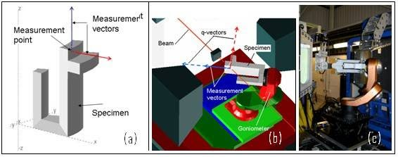

Introduction¶
SScanSS is requires three dimensional models of the sample and the instrument. The software manipulates these models enabling measurement points to be accurately positioned in sample space and simulations of scans to be performed.
Expected Usage¶
SScanSS can be used for planning prior to the experiment, setting-up during the experiment, and analysis after the experiment. A typical use of SScanSS is as follows:
Prior to beam time¶
A model of the sample to be measured is generated, by either:
LASER scanning the sample
Exporting a model from a CAD package
Generate a simple model from primitives e.g. sphere, cuboid etc
The user specifies the desired measurement points in the sample model.
The user specifies the desired strain components for each measurement point.
The virtual instrument is selected and modified to reflect the users choice of (optional) hardware items such as collimators, jaw settings etc.
The sample model is positioned within the virtual instrument and the scan is simulated. This simulation is performed in order to:
determine how the sample should be oriented in order to measure the required components,
determine feasibility, (are all measurement points accessible),
estimate count times by checking path lengths, (can the measurement be performed in the available time).
During beam time¶
The real sample is positioned on the instrument and its position measured and inputted into SScanSS.
The positioning system offsets required to measure the selected points are generated automatically and the scan is performed.
Data is analysed and new measurement points added, as required.
Post beam time¶
SScanSS can archive all the information required to recreate the experimental setup, thereby assisting in the accurate interpretation of results.
Results may be shown in the context of the model for example, by manually overlaying fields on the SScanSS virtual sample model.
Installation¶
Installers for Windows and Unix operating system can be download from the project’s release page. Software updates will also be accessible from the same page when available. While the software has not been tested on MacOS, you are welcome to try it, instructions to run the source code are available on github. The software can be processor and graphics intensive so ensure that these components meet or exceed the minimum requirements (lower specification than minimum might still work but higher is typically better).
Minimum System Requirements |
|
|---|---|
OS |
Linux or Windows 10, 11 (64 bit) |
CPU |
Intel® Core™ i5-4770K processor or better |
RAM |
4GB or larger for volumes |
Graphics Card |
NVIDIA GeForce GTX 970 or AMD Radeon RX 470 |
Storage |
At least 1GB of available space |
Note
If the software is not performing well, it might be running with the wrong GPU. Most laptops and some desktops have more than one GPU e.g. integrated (which is typically weaker) and dedicated GPU. The manufacturer of the GPU should have instructions for switching to the dedicated GPU (see Nvidia example)
Issues¶
After a new version of SScanSS 2 has been released, feedback is necessary to improve performance if you experience any crashes or unexpected behaviours, do not hesitate to open an issue on the github.
Citing SScanSS 2¶
1. J.A. James, J. R. Santisteban, L. Edwards and M. R. Daymond, “A virtual laboratory for neutron and synchrotron strain scanning,” Physica B: Condensed Matter, vol. 350, no. 1-3, p. 743–746, 2004.